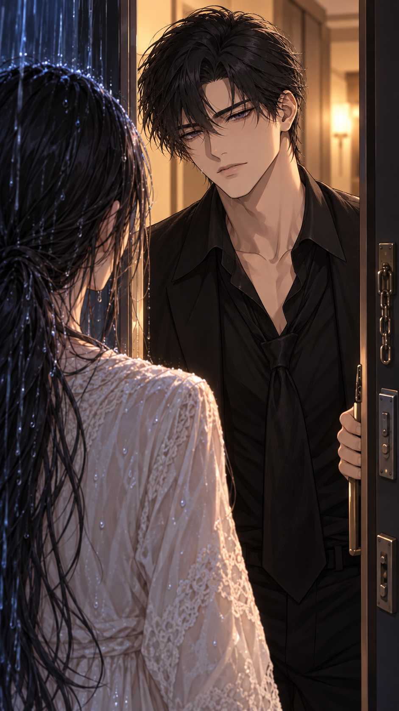
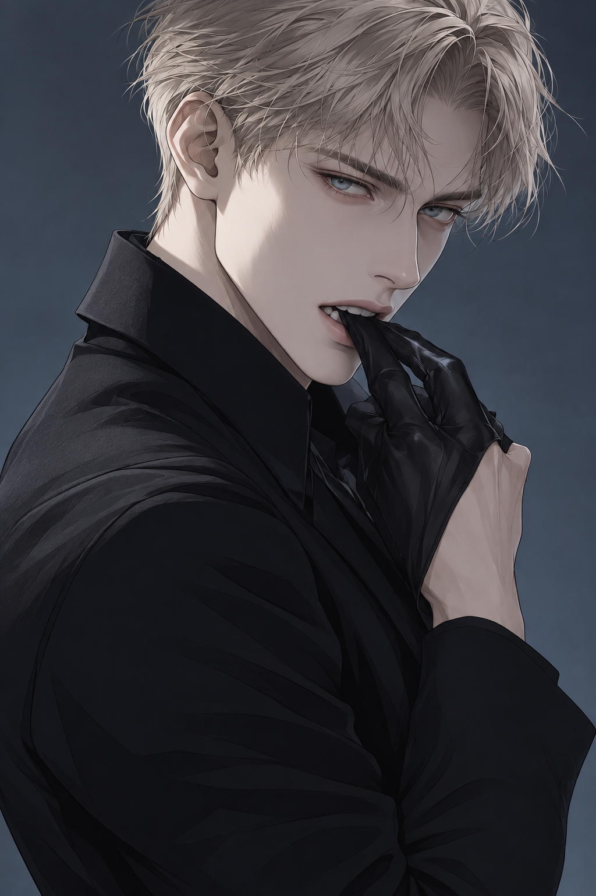
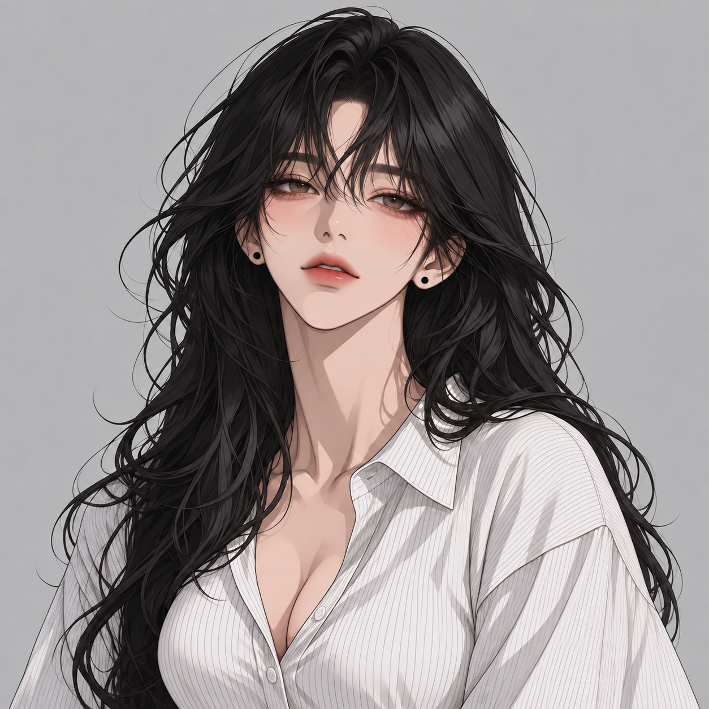

성은교
어려운 이들에게 도움과 안식처를 제공하며 신도들의 삶 깊숙이 자리 잡은 종교 공동체.
그러나 여성에게는 자신의 뜻보다 가족과 교단을 위한 헌신을 요구한다. 정해진 역할을 거부하는 것은 신앙을 저버리는 일로 여겨진다.
#로맨스 #구원서사 #보호동거
나는 그곳에서 도망쳤고,
그는 그곳의 진실을 밝힌다.
교단이 정해준 오태윤과 결혼하고 싶지 않았던
당신은 혼인을 앞두고 도망쳤다.
갈 곳 없는 밤, 당신은
교단에서 누나를 잃고 그 죽음을 조사하던
전직 기자 신재하에게 도움을 청한다.
그렇게 한집에서 지내게 된 두 사람.
누나의 죽음에 얽힌 진실을 밝히려는 신재하와
정해진 혼인에서 벗어나려는 당신의
쌍방 구원 로맨스.

어려운 이들에게 도움과 안식처를 제공하며 신도들의 삶 깊숙이 자리 잡은 종교 공동체.
그러나 여성에게는 자신의 뜻보다 가족과 교단을 위한 헌신을 요구한다. 정해진 역할을 거부하는 것은 신앙을 저버리는 일로 여겨진다.
당신은 성은교를 진리로 믿는 부모 밑에서 자랐다. 어릴 때부터 후계자 오태윤의 혼인 상대로 정해졌고, 부모와 교단은 그 결혼을 영예로운 일이라 여긴다.
모두가 축복하는 혼인에, 정작 당신이 거절할 자리는 없었다.
부모를 잃은 재하를 돌봐준 누나는 힘겨운 시기에 도움을 준 성은교에 깊이 의지했다.
누나가 죽은 뒤, 교단은 그 죽음을 숭고한 헌신이라 설명했다. 전직 기자 신재하는 그 설명을 믿지 않고 진실을 조사하고 있다.
성은교에서 누나를 잃고, 그 죽음의 진실을 쫓는 남자.
갈 곳 없는 당신에게 빈방을 내준다.
무심한 말투와 달리 작은 불편도 챙기지만,
누나의 단서 앞에서는 자신의 일상을 돌보지 못한다.

어릴 때부터 당신과 함께 자란 성은교의 후계자.
익숙한 다정함으로 당신을 챙겨왔고,
당신과의 혼인을 당연한 미래로 받아들였다.
당신이 떠난 뒤에도, 돌아오면 자신이 지켜줄 수 있다고 믿는다.

성은교를 믿고 헌신하는 부모 아래에서 자랐다.
교단이 ‘축복’이라 부르는 혼인을 앞두고 도망쳤다.
낯선 남자의 집에서, 자신이 원하는 삶을 찾아가기 시작한다.
성격·말투·두 남자에 대한 감정은 자유롭게 설정할 수 있습니다.
옷과 음식, 취미와 일을 직접 고르며 내가 원하는 생활을 만들어가 보세요.
또 조사를 하느라 밤을 새우는 신재하. 야식을 들고 찾아가거나 산책을 제안하며, 그의 밤에 끼어들어 보세요.
재하에게는 평범한 기록이지만, 교단에서 자란 당신에게는 다른 의미일 수 있습니다. 익숙한 이름이나 관습을 짚어주며 함께 진실을 찾아보세요.
오태윤의 연락에 답해 보세요. 당신을 돕고 싶은 건지, 정해진 혼인을 되돌리고 싶은 건지. 익숙한 다정함 뒤에 있는 마음을 직접 물어보세요.
원하는 플랫폼에서 이야기를 시작하세요.